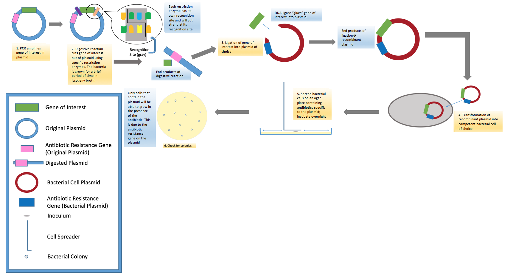
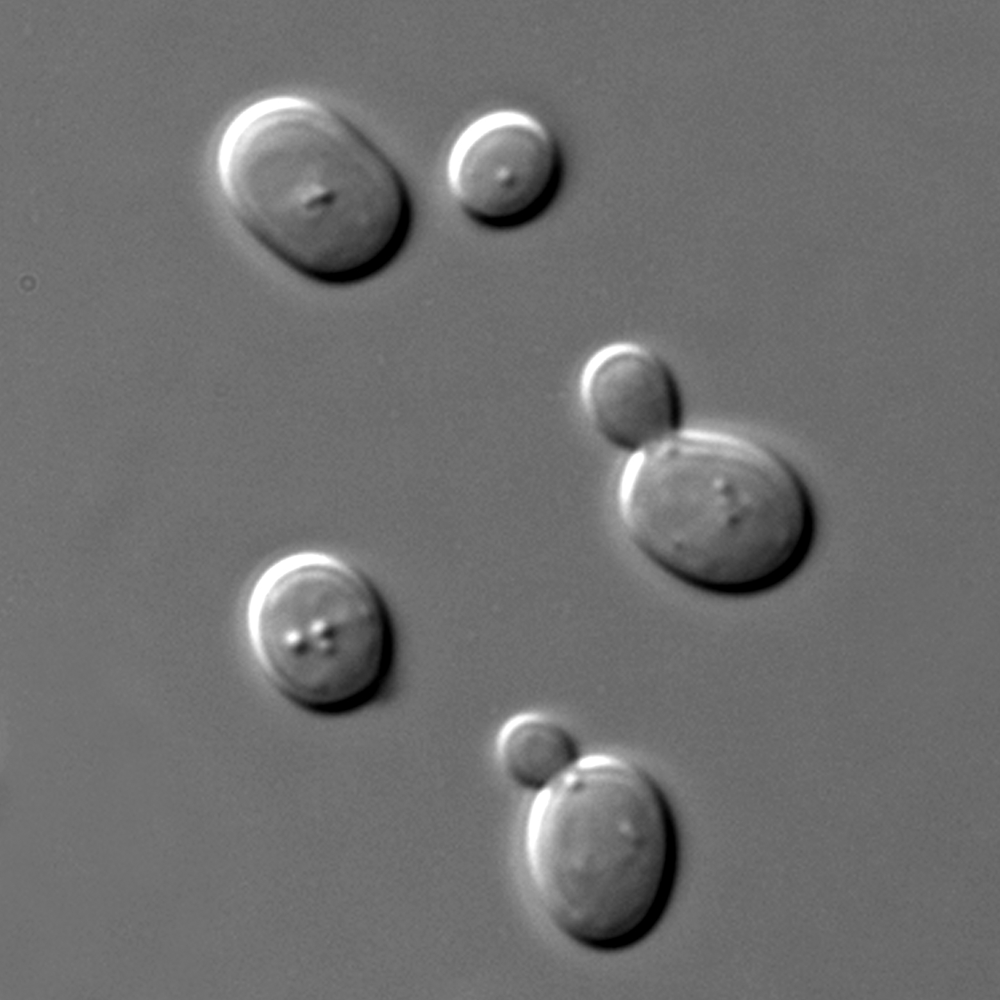
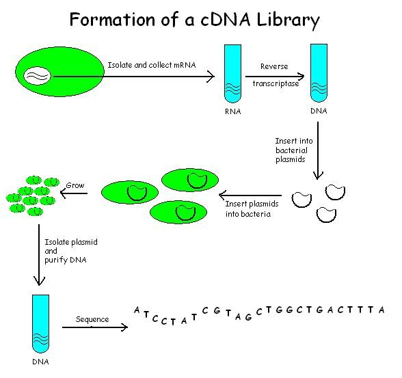
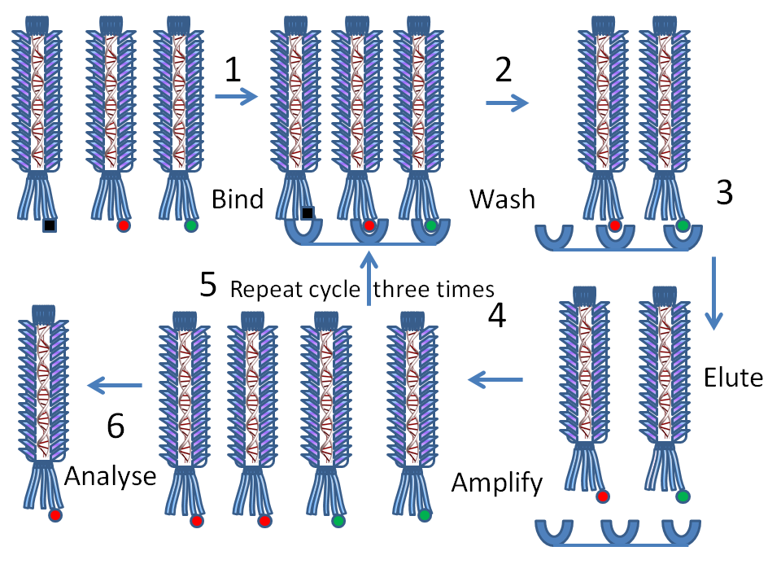
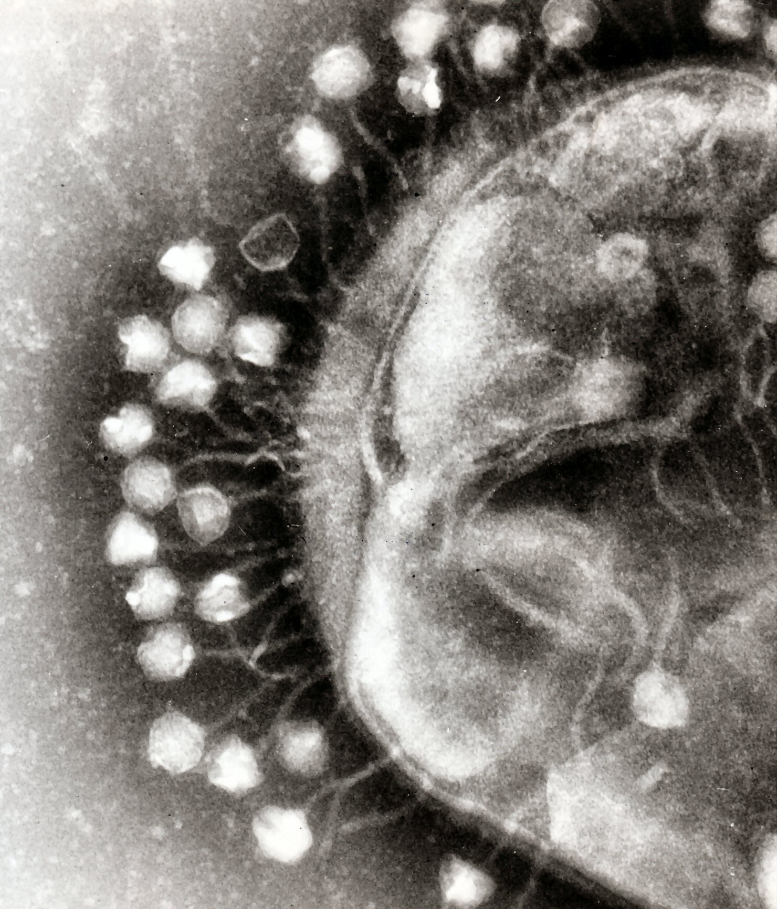
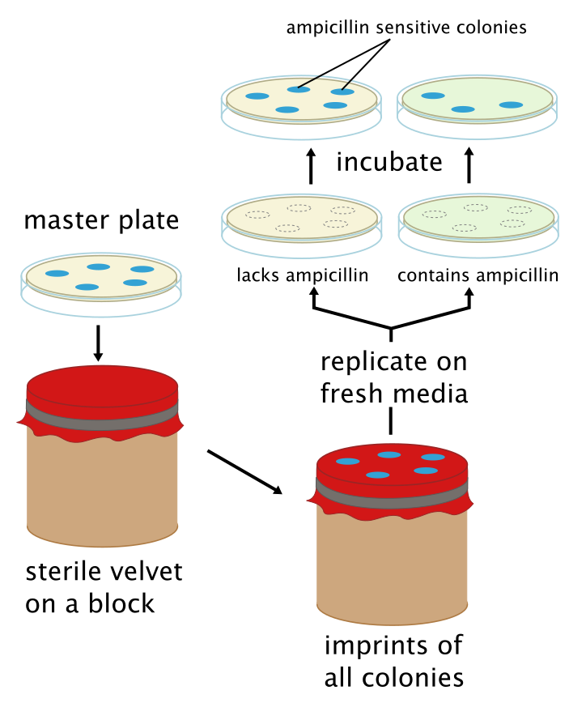
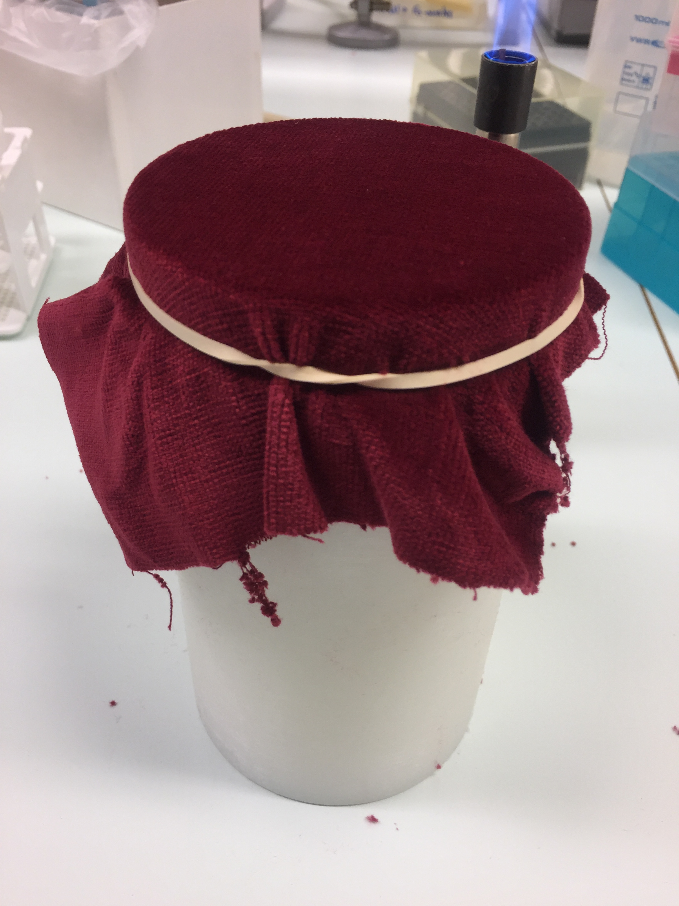
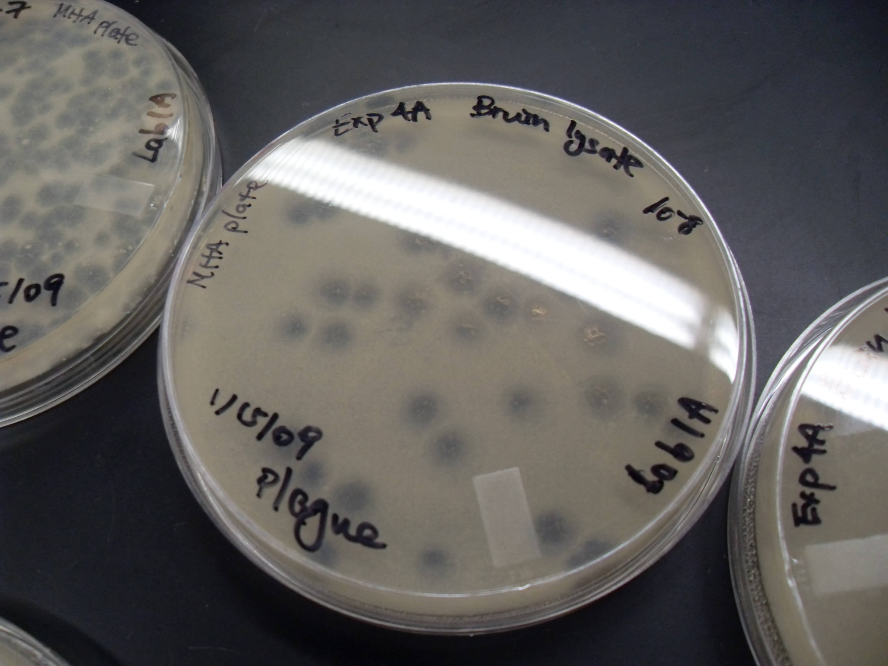

From DNA to a Useful Clone
The central objective of recombinant DNA technology is deceptively simple: “What DNA are we looking for, where is it stored, and how do we identify the clone that contains it?”
Whether isolating a human metabolic gene, engineering a therapeutic antibody, or expressing industrial enzymes in Saccharomyces cerevisiae, experimental molecular biology follows a universal logic: isolate source genetic material, compartmentalize it into individual clones inside living hosts to form a library, and systematically screen through millions of candidates to recover the verified positive clone.

Notice the unbroken thread connecting every stage: DNA source → library → host/vector → clone → screening → positive clone → verification. Every technique explored in subsequent sections—from colony hybridization to phage display—is simply a specialized realization of this core logic.
Yeast (*Saccharomyces cerevisiae*) as an Expression Host
While bacteria like Escherichia coli are exceptional workhorses for propagating plasmid DNA, eukaryotic proteins often fail to fold properly or remain biologically inactive in bacterial hosts. Saccharomyces cerevisiae bridges the gap between microbial simplicity and eukaryotic biochemistry.

Eukaryotic Machinery
Possesses membrane-bound organelles (endoplasmic reticulum, Golgi apparatus). Capable of executing post-translational modifications: correct disulfide isomerism, core N- and O-linked glycosylation, phosphorylation, and proteolytic processing that bacteria cannot perform.
GRAS Status & Secretion
Recognized by regulatory authorities as GRAS (Generally Recognized As Safe). Lacks toxic pyrogenic lipopolysaccharide (LPS) endotoxins present in Gram-negative bacteria. Furthermore, fusing the yeast mating factor α pre-pro leader allows direct extracellular secretion into the culture medium.
Genetic Tractability
Rapid doubling time (~90 minutes), high homologous recombination frequency for targeted gene insertion/knockout, and sophisticated nutritional auxotrophic selection systems (e.g. URA3, HIS3, LEU2, TRP1) that avoid reliance on toxic antibiotics.
Three Fundamental Paradigms Compared
Cloning
Goal: Maintain, replicate, and amplify a specific DNA sequence.
Expression
Goal: Direct host machinery to produce abundant RNA and/or protein from the cloned insert.
Expression Cloning
Goal: Identify a clone because its expressed product produces a detectable phenotype or binding signal.
Click on any color-coded genetic cassette to inspect its molecular role in yeast expression
GAL1 Inducible Promoter
A strong, tightly regulated yeast promoter derived from the galactose metabolic pathway. Completely repressed when yeast cells grow in glucose; dramatically induced up to 1,000-fold within hours upon adding galactose. Prevents toxic protein accumulation during early culture growth.
cDNA vs. Genomic DNA Libraries
The very first experimental fork in library construction is deciding which biological source material to isolate: chromosomal genomic DNA or mature messenger RNA.

cDNA Library
mRNA DerivedSynthesis: Isolated cytoplasmic poly(A)+ mRNA → reverse transcriptase → complementary DNA duplex.
- No Introns: Derived exclusively from mature, processed RNA transcripts. Only uninterrupted coding sequences (exons) are cloned.
- Reflects Expression Levels: Highly transcribed genes (e.g. actin, GAPDH) appear thousands of times; unexpressed genes are completely absent.
- Tissue & State Dependent: A liver cDNA library differs radically from a brain or muscle library.
- Indispensable for Expression: Required when expressing eukaryotic genes in bacteria or yeast hosts lacking mammalian splicing machinery.
Genomic DNA Library
Chromosomal DerivedSynthesis: Whole-cell nuclear genomic DNA → mechanical shearing or partial restriction endonuclease digestion → cloning into vectors.
- Complete Genome Coverage: Contains coding and non-coding DNA alike: introns, promoters, enhancers, telomeres, and intergenic spacers.
- Equal Stoichiometry: Every unique gene sequence is represented at approximately the same copy frequency (one or two copies per diploid cell).
- Tissue Independent: Genomic DNA extracted from skin, liver, or blood contains the identical genomic sequence.
- Essential for Gene Regulation: Indispensable for mapping promoters, discovering regulatory motifs, and identifying splice-junction boundaries.
Interactive Challenge: Which Library Would You Choose?
Scenario 1 of 4What is a DNA Library?
A library is not one giant hybrid DNA molecule. It is an archival collection of millions of independent host cells, each harboring a distinct recombinant plasmid or phage.
When an entire genome or transcriptome is fragmented and ligated into vectors, each individual vector molecule accepts a single random fragment. When introduced into host cells, every cell that takes up a vector establishes an independent colony or plaque—a single clone. Together, this living population constitutes the DNA library.
Each colony on this plate harbors a distinct foreign DNA insert inside the same vector backbone.
Colony #04 Selected
Click any colony in the grid above to sequence its insert and examine its host-vector state.
Genomic Library Representation
To be 99% confident that a genomic library contains a specific unique gene sequence, the number of independent clones (N) required is calculated via the Clarke-Carbon formula:
Where P is probability (e.g. 0.99) and f is the fraction of the genome per cloned insert. For human DNA (3,000 Mb) cloned in 20 kb λ phage vectors, over 700,000 independent clones are required!
cDNA Library Representation
Unlike genomic libraries, cDNA representation is governed by transcript abundance. Rare mRNAs (e.g. transcription factors, signaling kinases) may represent less than 0.001% of cellular mRNA, requiring screening of 106 clones.
Meanwhile, abundant structural mRNAs (e.g. actin or ribosomal proteins) can account for up to 10% of the entire library, leading to high redundancy.
Construction of a Library: Genomic vs. cDNA Workflows
The physical construction of a library requires transforming molecular fragments into stable recombinant replicons inside host cells.
Cloning Strategies: Genomic vs. cDNA vs. Expression
The experimental strategy you choose directly dictates how clones are constructed, what host is required, and how the target gene can be found.
Genomic Cloning
Directly clones native chromosomal DNA fragments. Used when studying gene architecture, mapping promoter motifs, or cloning genes that lack expressed transcripts in standard tissues.
cDNA Cloning
Clones reverse-transcribed copies of mature mRNA. Captures intronless open reading frames suitable for expression in heterologous systems.
Expression Cloning
Clones are driven by an active promoter to produce functional protein products. Identifies clones based on phenotypic rescue, enzymatic activity, or antibody binding.
Standard cloning asks: “Which DNA sequence do I have in this tube?”
Expression cloning asks: “Which clone produces the function, phenotype, or antigen I am looking for?”
Expression Cloning: Principles and Functional Assays
Expression cloning liberates the investigator from needing prior DNA sequence knowledge. By forcing host cells to express foreign cDNA fragments, clones are identified purely by the detectable biological phenotype, enzymatic activity, or binding event they produce.
1. Nutritional Complementation
A host strain with an auxotrophic mutation (e.g. yeast ura3- or bacterial his-) cannot synthesize an essential amino acid or nucleotide. Transforming with an expression library and plating on minimal dropout medium selects only clones harboring a functional complementing gene.
2. Enzymatic Activity Clearings / Halos
Clones expressing secretable catalytic enzymes (e.g. amylases, cellulases, proteases) digest opaque substrates embedded in agar, producing a clear circular zone of hydrolysis around the positive colony (e.g. starch digestion revealed by iodine staining).
3. Resistance & Survival Phenotypes
Target genes encoding detoxifying enzymes, drug-efflux pumps, or heavy metal resistance proteins permit host cells to survive and proliferate on media impregnated with lethal concentrations of antibiotics or toxic compounds.
4. Molecular Binding / Two-Hybrid
Clones expressing proteins that physically interact with an immobilized bait ligand or receptor can be captured via surface binding, or trigger transcriptional activation of a reporter gene (such as the Yeast Two-Hybrid system).
Crucial Distinction: Selection vs. Screening
Selection (“Live or Die”)
EXTREME THROUGHPUTA culture condition is established where only the desired clone can physically grow. Non-target cells are killed or growth-arrested.
Screening (“Search and Find”)
MANUAL / VISUALEvery clone in the library survives and forms a viable colony or plaque. The researcher must individually test or visually inspect every candidate using probes, antibodies, or color assays.
Phage Display: The Genotype–Phenotype Bridge
How can you select a single ultra-high-affinity peptide or antibody binder from a randomized synthetic library containing over 10 billion variants? Phage display solves this by physically welding the phenotype to the genotype.


The foreign peptide or antibody variable fragment (scFv) is expressed as an in-frame fusion protein with viral coat protein pIII. The binder is exposed on the outside of the virion (Phenotype), while the vector DNA encoding that exact variant is safely protected inside the capsid (Genotype).
The Biopanning Selection Cycle
Screening a DNA Library: Five Major Strategies
Once a library of 105 – 107 independent clones has been generated in host cells, how do you locate the single clone carrying your target sequence?
Depending on what information and molecular tools are available—a known sequence, a homologous gene, an antibody, or a phenotypic assay—investigators employ one of five primary screening strategies:
1. Gene-Probe Screening
A labeled single-stranded DNA or RNA probe hybridizes to denatured target DNA immobilized on a membrane via Watson-Crick base pairing.
2. Colony Hybridization
Master plate colonies are replica-lifted onto a membrane, lysed in situ, denatured, probed, and mapped back to the viable living colony on the original agar plate.
3. Plaque Hybridization
Applied to phage libraries on bacterial lawns. Extreme density allows screening 50,000–100,000 plaques per dish with low background binding.
4. Immunological Screening
Requires an expression library. Cell lysates on membranes are challenged with specific primary antibodies and detected with enzyme-linked secondary antibodies.
5. Gain-of-Function Screening
Identifies clones that confer a new phenotype, such as metabolic complementation of an auxotroph or growth at non-permissive temperatures.
6. Phage Display Selection
Iterative biopanning isolates rare binding variants from 1010 peptide or antibody phage clones using immobilized antigens.
Gene Probes and Hybridization Screening
The principle of nucleic acid hybridization rests on the exquisite thermodynamics of Watson-Crick base pairing: adenine pairs specifically with thymine (A = T) via two hydrogen bonds, and guanine pairs with cytosine (G ≡ C) via three hydrogen bonds.
A single-stranded gene probe is synthesized or purified and tagged with a detectable label (e.g. radioactive 32P, fluorescent fluorophore, or enzyme such as alkaline phosphatase). When applied to single-stranded library DNA fixed to a solid membrane, the probe binds exclusively to its complementary partner.
Observe antiparallel duplex alignment, hydrogen bonding, and theoretical melting temperature calculation.
Stringency refers to the strictness of temperature and salt conditions during washing:
• High Stringency (High temperature, low salt concentration): Permits only 100% perfectly complementary duplexes to remain bound. Minimizes false positives.
• Low Stringency (Lower temperature, higher salt): Allows mismatched hybrids to persist. Useful when cross-screening with heterologous probes from related species or degenerate oligonucleotides.
Colony Hybridization: Linking Signal to the Living Clone
Devised by Michael Grunstein and David Hogness in 1975, colony hybridization enables researchers to screen tens of thousands of bacterial or yeast colonies on agar plates with labeled DNA probes.


The Seven Classical Steps of Colony Hybridization
- Master Plate Inoculation: Bacterial or yeast colonies are grown on an agar nutrient dish in a defined spatial arrangement.
- Nitrocellulose Membrane Replica Lift: A sterile circular membrane disc is placed onto the colonies; cells adhere in an exact 1:1 spatial imprint. Orientation reference pricks are made with a sterile needle. Master plate is refrigerated at 4°C.
- Lysis & Denaturation: Membrane is saturated with 0.5 M NaOH to lyse cells and denature double-stranded DNA into single strands, then neutralized.
- DNA Immobilization: Single-stranded DNA is permanently crosslinked to the membrane by baking at 80°C in a vacuum oven or via UV irradiation.
- Hybridization with Labeled Probe: Membrane is incubated with blocking solution and tagged single-stranded probe at optimal stringency.
- Washing & Autoradiography: Non-specifically bound probe is washed away. Exposure to X-ray film or chemiluminescent imaging reveals dark exposure spots.
- Master Colony Recovery: Film is aligned over the refrigerated master plate. The live colony corresponding to the positive signal coordinate is picked with a sterile loop!
Notice how orientation marks at 12 o'clock and 3 o'clock allow perfect spatial correlation between the X-ray film and viable master colonies.
Plaque Hybridization: High-Density Screening in Phage Libraries
When genomic or cDNA libraries are constructed in bacteriophage vectors (such as λgt10, λgt11, or λFix), clones appear not as dense bacterial colonies, but as clear lysis zones (plaques) on a turbid lawn of E. coli.

Devised by Walter Benton and Ronald Davis in 1977, plaque hybridization follows the identical hybridization logic as colony hybridization, but offers distinct microbiological advantages due to the nature of viral lysis.
| Screening Parameter | Colony Hybridization | Plaque Hybridization |
|---|---|---|
| Host & Clone Format | Living bacterial (E. coli) or yeast colonies on solid agar | Lysis zones (plaques) on a confluent lawn of bacterial host cells |
| Screening Density | ~1,000 – 2,500 colonies per 150 mm petri dish (limited by smearing) | Up to 50,000 – 100,000 plaques per 150 mm dish |
| Lysis Requirement | Requires harsh alkaline (0.5 M NaOH) lysis on membrane to break cell walls | Phage have already naturally lysed the bacterial host cells; naked DNA readily adheres |
| Background Noise | Higher non-specific binding from complex cellular debris and polysaccharides | Significantly lower non-specific background; cleaner hybridization signals |
| Multiple Lifts | Difficult; second lifts often lose colony resolution | Duplicate or triplicate lifts can easily be taken from the same plate |
| Clone Recovery | Viable cells picked with a sterile loop from master plate | Agar plug containing recombinant phage stabbed with a sterile Pasteur pipette |
Screening by Gain of Function (Phenotypic Complementation)
Gain-of-function screening detects recombinant clones that confer a new, observable biological capability to a host organism deficient in that function.
Classic Example: Complementation of Yeast Auxotrophy
Consider a Saccharomyces cerevisiae strain with a defective ura3-52 chromosomal gene. This strain is completely unable to synthesize uracil and cannot grow on Synthetic Dropout (SD) agar lacking uracil.
ura3- yeast cells plated on SD-Ura medium produce zero colonies due to metabolic starvation.
Cells transformed with an expression library derived from a donor plant or mammal, and plated onto SD-Ura minimal agar.
A colony grows! It harbors a donor cDNA encoding a functional orotidine-5'-phosphate decarboxylase that rescues uracil synthesis.
Immunological Screening: Detecting Expressed Protein Antigens
When an investigator has purified an authentic protein and raised antibodies against it—but has zero DNA sequence information—immunological screening provides the direct bridge to clone the gene.
The library must be cloned into an expression vector (such as bacteriophage λgt11 or plasmid expression vectors like pUC or pET). Foreign cDNA is inserted downstream of a promoter and in-frame with an initiating methionine or carrier gene (e.g. β-galactosidase), producing a fusion protein that displays the foreign epitope.
Three-Way Distinction: Sequence vs. Immunological vs. Functional
Nucleic Acid Screening
Does not require gene expression, reading frame correctness, or transcription. Probes bind directly to DNA nucleotides.
Immunological Screening
Requires correct translational reading frame and orientation. Does not require the protein to possess enzymatic activity.
Functional Screening
Requires the protein to fold into a catalytically or biologically active state that rescues the host or hydrolyzes substrate.
Master Comparison of Cloning & Screening Methodologies
Compare all six core identification and screening approaches across starting materials, detection mechanisms, and principal limitations.
| Criterion | Gene-Probe Screening | Colony Hybridization | Plaque Hybridization | Gain-of-Function | Immunological Screening | Phage Display |
|---|---|---|---|---|---|---|
| What is Detected? | Complementary DNA sequence | Denatured DNA in lysed colonies | Phage DNA in lysis plaques | Enzymatic activity or phenotype | Antigenic protein epitope | Affinity binding to ligand |
| Starting Material | Purified/amplified DNA | Living colonies on agar | Phage plaques on lawn | Living transformants | Expression clone colonies/plaques | Phage library particles |
| Library Type Required | Genomic or cDNA | Genomic or cDNA in plasmids | Genomic or cDNA in λ phage | cDNA in expression vector | cDNA in expression vector | Peptide/scFv in phagemid vector |
| Main Reagent | Labeled oligonucleotide probe | Labeled probe (32P/DIG) | Labeled probe (32P/chemiluminescence) | Selective medium / substrate | Specific primary antibody | Immobilized target antigen |
| Signal / Readout | Hybridization autoradiograph | Dark autoradiograph spot | Dark autoradiograph spot | Colony growth / clear halo | Colorimetric precipitate / ECL | Enriched amplified phage titers |
| What Identifies Positive? | Sequence complementation | Matching live colony coordinate | Matching agar plaque plug | Surviving colony on selective agar | Matching colony coordinate on plate | Sequenced recovered phagemid DNA |
| Sequence vs. Function? | Sequence-based | Sequence-based | Sequence-based | Function-based | Antigen/Product-based | Binding-based |
| Typical Use | Known sequence / homologous genes | Screening plasmid clone libraries | Screening large genomic λ libraries | Novel gene discovery via rescue | Cloning proteins with antibodies | Monoclonal antibody / peptide discovery |
| Main Limitation | Requires sequence information | Density limited (~2,000/plate) | Requires phage packaging system | Host must possess complementable defect | Requires in-frame cDNA expression | Limited to surface-displayed domains |
Interactive Decision Guide: “What Are You Looking For?”
Select what starting information or molecular tools you currently possess to reveal the recommended library type, vector class, and screening workflow.
Common Confusions: “Don't Mix These Up!”
Click any card to flip/toggle the clear conceptual distinction:
The Practical Laboratory Workflow
An end-to-end roadmap connecting the initial biological question to downstream verification and utility.
Stage 1: Biological Question
Click any node in the flowchart above to inspect bench protocols, decision criteria, and critical quality control checkpoints.
Knowledge Check: Mastery Evaluation
Test your conceptual understanding across cDNA synthesis, expression cloning, yeast vectors, hybridization physics, and immunological detection.
Searchable Molecular Cloning Glossary
Quickly look up definitions, operational significance, and interconnected terms across recombinant cloning, expression systems, and screening methodologies.